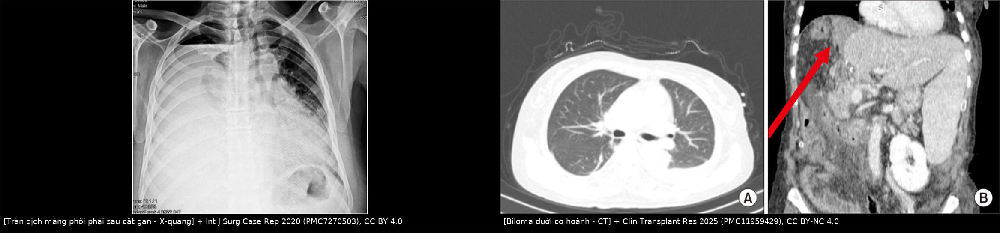
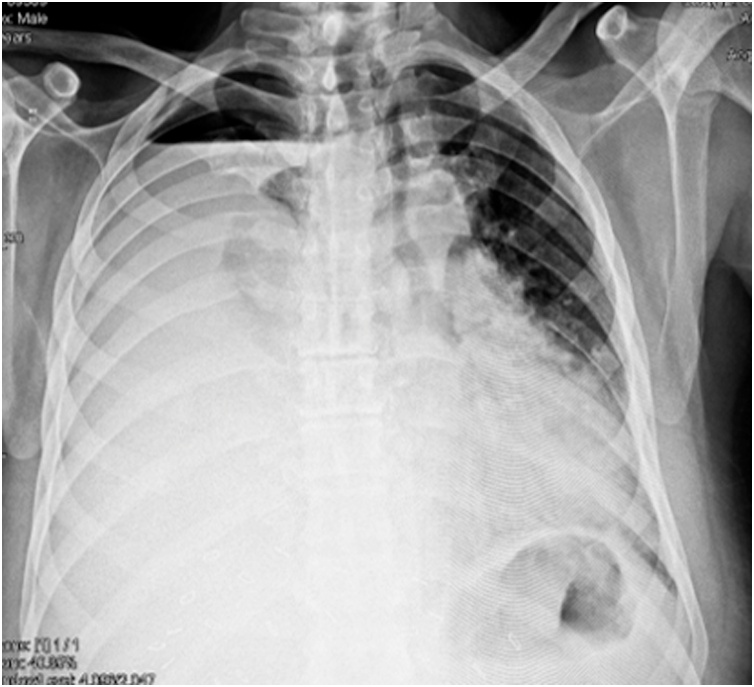
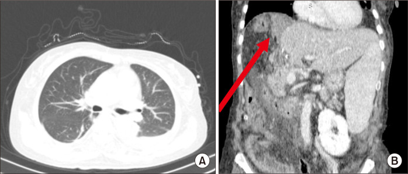
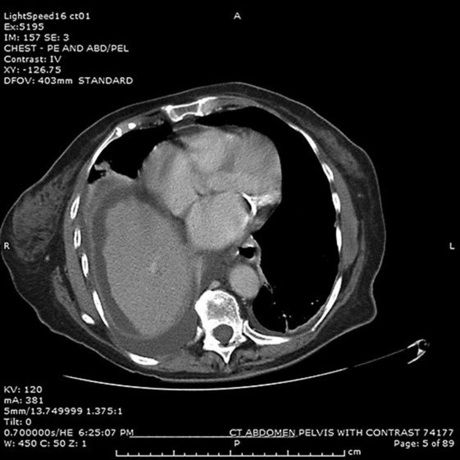

1820 — Rò mật–màng phổi sau cắt gan/ghép gan: bilothorax, tỷ lệ bilirubin dịch/huyết thanh, dẫn lưu màng phổi + giải áp đường mật và bẫy "tràn dịch đơn thuần" / Biliary–pleural fistula after hepatectomy and liver transplantation
Tags: pattern:bilothorax pattern:tran-dich-mang-phoi pattern:ro-mat vung:gan vung:co-hoanh vung:mong-phoi score:ISGLS score:Clavien-Dindo protocol:CT-nguc-bung protocol:MRCP protocol:HIDA protocol:ERCP protocol:PTBD incidentaloma:biloma
Mức chắc chắn (certainty): tổng hợp y văn (literature synthesis) — tự biên từ đoàn hệ 4.715 ca cắt gan về tràn dịch màng phổi nặng (PMC10727470, CC BY), ca rò mật–màng phổi sau ghép gan sống cho (PMC11959429, CC BY-NC 4.0), ca sau cắt gan phân thùy VIII (PMC7270503, CC BY 4.0), ca sau nút mạch cửa (PVE) (PMC5471797, CC BY-NC 4.0), ca rò mật–màng phổi do túi mật thủng (PMC12032970, CC BY 4.0), tổng quan bilothorax sau ERCP (PMC11442017, CC BY-NC) và ca "bilothorax giả" (PMC13282023, CC BY 4.0). Chưa gắn một ca nguyên văn đơn lẻ của riêng bài.
Bài này là nhánh "xuyên cơ hoành" của 1814 – Rò mật sau cắt gan. 1814 đã chốt phân độ ISGLS, biloma – áp-xe – rò miệng nối, CE-MRCP định vị và ERCP/PTBD. Nhưng khi mật đi qua cơ hoành vào khoang màng phổi, bệnh cảnh đổi tên và đổi cách xử trí: triệu chứng hô hấp chi phối, chẩn đoán là sinh hóa chứ không phải hình ảnh, và bắt buộc vừa dẫn lưu màng phổi vừa giải áp đường mật — chỉ làm một trong hai là rò tiếp tục.
Câu chốt: Tràn dịch màng phổi sau cắt gan là chuyện thường (18,4–54,5%), nhưng "tràn dịch đơn thuần" là chẩn đoán phải chứng minh, không phải mặc định. Trong 4.715 ca cắt gan, 5,3% có tràn dịch màng phổi nặng phải đặt ống (trung vị ngày 7, 18,4% phát hiện sau khi ra viện) và rò mật xuất hiện 4,0% ở nhóm này so với 1,3% ở nhóm không tràn dịch nặng (p < 0,001)** (PMC10727470). Sau ghép gan, **tràn dịch kéo dài > 4 tuần phải được coi là rò mật–màng phổi cho tới khi chứng minh ngược (PMC11959429).
1. Tổng quan bệnh học – cơ chế hình ảnh
- Định nghĩa: bilothorax (tràn dịch màng phổi mật) là mật trong khoang màng phổi. Đường đi hay gặp nhất: rò mật ở mặt cắt gan/miệng nối → tụ mật dưới cơ hoành (biloma) → qua khuyết nhỏ của cơ hoành hoặc đường bạch mạch vào khoang màng phổi; ngoài ra trực tiếp do thủ thuật xuyên cơ hoành (dẫn lưu màng phổi, nút mạch cửa, đốt u) hoặc vết thương xuyên hoành. Vì gan nằm sát vòm hoành phải, phần lớn ca là bên PHẢI (PMC13282023).
- TẠI SAO CT một mình KHÔNG gọi tên được bệnh — vật lý HU: mật có tỷ trọng 0–20 HU, gần trùng dịch thanh mạc, dịch tụ hậu phẫu, nước và mủ loãng; chỉ máu tụ 35–70 HU mới tách được. Nghĩa là "dịch đậm độ dịch" trên CT không loại trừ và cũng không chứng minh mật. Chẩn đoán là sinh hóa của dịch màng phổi, không phải đậm độ.
- Ngưỡng sinh hóa đang dùng: tiêu chuẩn phổ biến nhất là tỷ lệ bilirubin dịch màng phổi / bilirubin huyết thanh > 1 (PMC13282023). Ca sau ghép gan có bilirubin dịch > 200 µmol/L; ca sau ERCP có 170 µmol/L, bằng mức bilirubin huyết thanh trước can thiệp (PMC11959429, PMC11442017).
- TẠI SAO tỷ lệ > 1 KHÔNG đủ một mình — cơ chế dương tính giả: bilirubin trong dịch màng phổi có thể đến từ thoái giáng hồng cầu trong tràn máu/tràn dịch viêm, chứ không phải mật tự do. Ca "bilothorax giả": thoát vị hoành trái nghẹt + tắc ruột, tràn dịch máu với tỷ lệ bilirubin dịch/huyết thanh tăng nhưng không có mật thật; tác giả nhấn mạnh không được suy ra rò mật chỉ từ bilirubin (PMC13282023). Vì vậy phải cộng: màu dịch vàng–nâu ô liu, bối cảnh mổ gan/ghép/đường mật, và hình ảnh đường rò.
- TẠI SAO mật trong màng phổi lại nguy hiểm: mật là chất kích thích hóa học lên màng phổi → tràn dịch tiết, viêm, dày dính, màng phổi bị giam (trapped lung); là môi trường nuôi khuẩn → empyema, nhiễm khuẩn huyết, có thể ARDS. Trong ca sau cắt gan, dịch đầu tiên là 2.600 mL mủ, chỉ ngày hôm sau mới ra dịch màu vàng mật — tức nhiễm trùng có thể che mất chẩn đoán (PMC7270503).
- Tần suất và thời điểm — số phải nhớ: tràn dịch màng phổi sau cắt gan 18,4–54,5%; tràn dịch nặng phải dẫn lưu 5,3% (250/4.715), trung vị ngày 7 (IQR 5–14), 18,4% chẩn đoán sau khi ra viện, 75,2% kèm biến chứng khác (so với 46,8%), tử vong 90 ngày 8,8% vs 2,9% (PMC10727470). Ở nhóm ghép gan, mốc > 4 tuần là ngưỡng nghi rò (PMC11959429).
- TẠI SAO thời điểm lại muộn: rò mặt cắt thường ngày 3–10, nhưng rò miệng nối/hẹp đường mật có thể âm thầm hàng tuần: ca sau ghép có rò mật từ ngày 5, CT ngày 10 chưa có tràn dịch màng phổi, rồi tràn dịch xuất hiện sau ERCP (PMC11959429); ca sau PVE có tràn dịch ngày 1, nhưng 3 tuần sau mới thành empyema lớn (PMC5471797).
- TẠI SAO phải giải áp đường mật, không chỉ hút màng phổi: áp lực trong cây mật cao hơn áp lực màng phổi; nếu chênh áp còn, mật tiếp tục chảy qua lỗ rò dù đã đặt ống. Giảm chênh áp bằng cắt cơ thắt Oddi + stent hoặc PTBD là điều kiện để lỗ rò tự đóng. Ca minh họa: sau cắt cơ thắt (dù không làm được đầy đủ vì co thắt), lưu lượng giảm 300 → 150 → 100 mL/ngày, ống ngực rút ngày 23 (PMC7270503).
- TẠI SAO HIDA vẫn cần dù đã có CT/MRCP: 99mTc-PIPIDA/HIDA được tế bào gan bắt rồi bài tiết vào mật; hoạt độ xuất hiện trong khoang màng phổi hoặc trong ống dẫn lưu ngực = bằng chứng trực tiếp mật đang đi qua lỗ rò. Ca túi mật thủng cho thấy chất đánh dấu tích tụ trên thùy gan phải và trong ống ngực (PMC12032970). Ngược lại MRCP chỉ thấy dịch, và đã có ca MRCP ghi "không có rò mật–màng phổi" trong khi bilirubin dịch 170 µmol/L (PMC11442017) — MRCP âm không loại trừ.
2. Mẫu hình + chẩn đoán phân biệt theo bối cảnh (gamut)
- Bối cảnh 1 — sau cắt gan (kể cả cắt phân thùy trên cao): rò từ mặt cắt nhu mô hoặc ống phân thùy bị đứt, tụ mật dưới hoành rồi xuyên hoành. Đây là nhóm hay gặp nhất; liên quan vùng "bare area" nơi cơ hoành không có phúc mạc che → đường xuyên hoành ngắn nhất.
- Bối cảnh 2 — sau ghép gan (đặc biệt sống cho): rò miệng nối mật–mật hoặc mật–ruột; thường kèm hẹp miệng nối về sau. Tràn dịch > 4 tuần = nghi rò (PMC11959429).
- Bối cảnh 3 — sau nút mạch cửa (PVE): đầu kim xuyên qua vòm hoành/đường mật; tràn dịch xuất hiện ngày 1, có thể thành empyema sau vài tuần (PMC5471797).
- Bối cảnh 4 — sau can thiệp đường mật qua da (PTBD/ERC): ống có thể gãy/gập hoặc đầu ống nằm trong khoang màng phổi → mật bơm thẳng vào màng phổi; ca sau PTBD có gập ống gây ứ dịch màng phổi.
- Bối cảnh 5 — sau đốt u (RFA/MWA/TACE/TARE): hoại tử ống mật + rò; thường đi cùng áp-xe/hoại tử ở gan.
- Bối cảnh 6 — chấn thương ngực–bụng/xuyên hoành: vỡ gan + rách cơ hoành; máu nhiều trên CT nhưng bilirubin dịch cao mới xác nhận mật.
- Bối cảnh 7 — "tự phát"/túi mật thủng: viêm túi mật thủng → áp-xe dưới gan sát cơ hoành → rò; ca Cureus: ổ màng phổi 13,9 × 7,1 × 19,1 cm, ổ dưới hoành 2,9 × 5,3 × 3,4 cm "không tách được khỏi cơ hoành" (PMC12032970).
- Bối cảnh 8 — bilothorax GIẢ: thoát vị hoành nghẹt/tắc ruột hoặc tràn máu làm bilirubin dịch tăng mà không có mật; không có bối cảnh gan–mật + không thấy đường rò (PMC13282023).
- Gợi nhớ 5 chữ — "D-R-A-I-N": Diaphragm (khuyết hoành?) · Resection (cắt gan/ghép?) · Ablation/PVE/PTBD (can thiệp xuyên hoành?) · Infection (mủ/empyema che mật?) · Not bile (bilothorax giả do máu/thoát vị?).
3. Bảng so sánh phân biệt (ma trận đối chiếu)
| Thực thể (entity) | Hình ảnh / dấu hiệu điển hình | Chốt vào (rule-in) | Chốt loại (rule-out) | Gợi ý xác nhận |
|---|---|---|---|---|
| Rò mật–màng phổi sau cắt gan | Tràn dịch phải sau mổ 5–10 ngày, kèm biloma dưới hoành; dịch vàng–nâu ô liu | Bilirubin dịch/huyết thanh > 1 + biloma dưới hoành sát cơ hoành + bối cảnh cắt gan | Dịch trong 0–20 HU, không biloma, bilirubin dịch thấp → tràn dịch đơn thuần | CT ngực–bụng có cản quang + chọc dò đo bilirubin |
| Tràn dịch màng phổi "đơn thuần" sau cắt gan | Tràn dịch lượng ít–vừa, tự giảm, không sốt, không biloma | Bilirubin dịch/huyết thanh ≤ 1 + không thấy rò trên HIDA/MRCP | Bilirubin dịch tăng hoặc biloma sát hoành → không phải đơn thuần | Theo dõi 48–72 giờ; chọc dò khi không giảm |
| Empyema | Dịch vách, khí trong màng phổi, màng phổi dày; sốt cao | pH < 7,2, glucose thấp, LDH cao, cấy dương | Dịch trong, không vách, cấy âm → chưa thành mủ | Dẫn lưu + cấy; đo bilirubin song song |
| Chylothorax | Dịch trắng đục như sữa, sau mổ ngực/bụng trên | Triglyceride dịch rất cao (ngưỡng Light 110 mg/dL) + không biloma | Dịch vàng–nâu, TG thấp → không phải dưỡng trấp | Điện di lipoprotein; nhịn ăn/MCT |
| Hemothorax | Dịch máu, Hct dịch cao, thiếu máu | Hct dịch > 50% Hct máu | Hct dịch thấp + bilirubin cao → nghĩ mật | CT + chọc dò; đừng nhầm bilirubin từ máu tan là mật |
| Áp-xe dưới hoành gây tràn dịch phản ứng | Ổ dịch dưới hoành + tràn dịch lượng ít, không có đường rò | Bilirubin dịch/huyết thanh ≤ 1 + ổ dưới hoành không thông màng phổi | Bilirubin dịch cao, đường rò thấy trên HIDA → rò thật | HIDA/CE-MRCP; dẫn lưu ổ dưới hoành |
| Bilothorax giả (thoát vị hoành/máu tan) | Tràn dịch TRÁI + quai ruột trong lồng ngực, hoặc tràn máu | Bối cảnh không có bệnh gan–mật + không đường rò + bilirubin từ hồng cầu | Có biloma/đường rò/tiền sử mổ gan → rò thật | CT bụng–ngực; HIDA âm |
| Biloma KHÔNG thông màng phổi | Tụ dịch dưới hoành, không tràn dịch hoặc tràn dịch nhỏ | HIDA không thấy hoạt độ trong màng phổi + không triệu chứng hô hấp | Hoạt độ trong ống ngực/khoang màng phổi → đã thông | CE-MRCP/HIDA; dẫn lưu ổ dưới hoành |

Trái: X-quang ngực sau cắt phân thùy VIII — tràn dịch phải gần toàn bộ làm lệch trung thất sang trái (hình ảnh của ca 2.600 mL dịch). Phải: CT bụng–ngực ở ca ghép gan — (A) chưa có tràn dịch màng phổi, (B) biloma dưới cơ hoành phải (mũi tên đỏ) là "nguồn" của rò. Ảnh ghép letterbox nền đen, không crop/kéo giãn. Nguồn: Int J Surg Case Rep 2020 (PMC7270503) Picture 3, CC BY 4.0 (trái); Clin Transplant Res 2025 (PMC11959429) Fig. 1, CC BY-NC 4.0 (phải).Vì sao phải chụp cả ngực và bụng trong một lần
- Ổ sinh bệnh ở bụng, hậu quả ở ngực: nếu chỉ chụp ngực, thấy "tràn dịch" mà không thấy biloma/dịch dưới hoành → dễ dừng ở "tràn dịch sau mổ".
- Đường rò là đường thẳng từ biloma lên khoang màng phổi: trên coronal thấy rõ ổ dịch dưới hoành áp sát vòm hoành và mất liên tục cơ hoành; trên axial thấy dịch hai bên cơ hoành.
- Ống dẫn lưu ngực nằm trong ổ mật là bằng chứng gián tiếp mạnh — nhưng phải đo bilirubin dịch mới chốt.
4. Protocol chụp + xử trí theo bậc
- Bước 1 — hình ảnh: X-quang ngực (phát hiện tràn dịch, lệch trung thất) + CT ngực–bụng có cản quang thì tĩnh mạch cửa (~70–80 giây): tìm biloma, áp-xe, giãn đường mật, mất liên tục cơ hoành, đường đi ống dẫn lưu. Không dùng đậm độ dịch để kết luận.
- Bước 2 — chọc dò màng phổi (thoracentesis) là bước chẩn đoán quyết định: gửi bilirubin (dịch + máu cùng lúc), triglyceride, tế bào + công thức, pH, glucose, LDH, protein, cấy, tế bào học. Ngưỡng: bilirubin dịch/huyết thanh > 1; kèm màu vàng–nâu ô liu.
- Bước 3 — xác định ĐƯỜNG RÒ khi cần: MRCP T2 (hình thái đường mật) ± CE-MRCP với gadoxetate (thì gan–mật 60–180 phút); HIDA (99mTc-PIPIDA) khi MRCP âm mà vẫn nghi — hoạt độ trong màng phổi/ống ngực = chốt. MRCP âm không loại trừ (ca bilirubin 170 µmol/L với MRCP "không rò").
- Bước 4 — dẫn lưu màng phổi: pigtail 8–14 Fr dưới hướng dẫn siêu âm/CT; lý tưởng là dẫn lưu kín, hút nhẹ; không mở ngực sớm khi chưa giải áp đường mật. Theo dõi lưu lượng, màu, bilirubin dịch. Trong ca ghép, lưu lượng về 0 vào ngày 15 sau đặt pigtail.
- Bước 5 — giải áp đường mật (bắt buộc, song song): ERCP cắt cơ thắt + stent nhựa là lựa chọn đầu tay (vừa chẩn đoán vừa điều trị); PTBD khi ERCP thất bại, ống mật bị đứt hoàn toàn hoặc giải phẫu không tiếp cận được. Ca sau ghép cần PTBD muộn vì hẹp miệng nối sau khi rò đã đóng.
- Bước 6 — mổ: chỉ khi rách cơ hoành lớn, ống mật đứt hoàn toàn không tái lập được, màng phổi bị giam/dày dính (decortication), hoặc thất bại sau 2–4 tuần can thiệp tối ưu.
- Kháng sinh: không dự phòng mù kéo dài; dùng khi empyema/nhiễm đường mật theo cấy; dẫn lưu là điều trị chính.
- Theo dõi: siêu âm/CT lại sau 48–72 giờ nếu sốt hoặc lưu lượng không giảm; rút ống khi lưu lượng < 50 mL/ngày, dịch trong, phổi nở; đo lại bilirubin dịch trước khi rút nếu còn nghi.
flowchart TD
A["Tràn dịch màng phổi phải sau cắt/ghép gan"] --> B["CT ngực-bụng có cản quang"]
B --> C["Chọc dò: bilirubin dịch/máu, TG, pH, cấy"]
C --> D{"Bilirubin dịch/máu > 1 va mau vang-nau oliu?"}
D -->|Không| E["Tràn dịch đơn thuần/empyema/chylothorax: điều trị theo nguyên nhân"]
D -->|Có| F["Bilothorax: dẫn lưu màng phổi pigtail 8-14 Fr"]
F --> G["Định vị đường rò: MRCP / CE-MRCP / HIDA"]
G --> H["Giải áp đường mật: ERCP cắt cơ thắt + stent"]
H --> I{"Còn rò hoặc ống mật đứt?"}
I -->|Có| J["PTBD hoặc can thiệp/mổ tái lập lưu thông"]
I -->|Không| K["Rút ống khi < 50 mL/ngày, phổi nở"]
J --> K
K --> L["Theo dõi hẹp miệng nối về sau"]
5. Biến thể bình thường và cạm bẫy
- Bẫy số 1 — gọi là "tràn dịch phản ứng sau mổ" rồi chờ: tràn dịch tăng dần, không giảm sau 72 giờ, hoặc tái phát sau rút ống → phải chọc dò đo bilirubin, không chờ thêm.
- Bẫy số 2 — tin MRCP âm: đã có ca MRCP báo "không có rò" nhưng bilirubin dịch 170 µmol/L và dịch vàng–nâu ô liu. HIDA/CE-MRCP hoặc chọc dò mới là chốt.
- Bẫy số 3 — để mủ che mật: ca sau cắt gan có 2.600 mL dịch mủ trước, hôm sau mới ra dịch mật. Nếu chỉ cấy mủ rồi dừng, sẽ bỏ sót rò.
- Bẫy số 4 — bilirubin dịch cao nhưng KHÔNG có mật: tràn máu hoặc thoát vị hoành nghẹt làm bilirubin tăng do hồng cầu thoái giáng. Cần bối cảnh + đường rò + HIDA.
- Bẫy số 5 — chỉ dẫn lưu màng phổi, không giải áp đường mật: rò sẽ tiếp tục; đây là lỗi phổ biến nhất. Hai việc phải làm song song.
- Bẫy số 6 — cắt cơ thắt "không đủ" vẫn có tác dụng: ca sau cắt gan cơ thắt co thắt, không cắt được đầy đủ, nhưng lưu lượng vẫn giảm 300 → 150 → 100 mL/ngày và ống rút ngày 23 — không vì thủ thuật chưa hoàn hảo mà bỏ theo dõi.
- Bẫy số 7 — tràn dịch xuất hiện SAU một can thiệp khác: ca ghép có CT ngày 10 không tràn dịch, tràn dịch xuất hiện sau ERCP → ngày tháng không quan trọng bằng chuỗi sự kiện.
6. Tự lượng giá — Blind Quiz ngay trên trang tĩnh
Ca 1 — Nam 60 tuổi, cắt phân thùy VIII lấy di căn đại tràng, không đặt dẫn lưu bụng. Ngày 7: khó thở, sốt, SpO₂ 84%. Nhìn phim trước.

- Câu hỏi: Mô tả bất thường chính? Hai chẩn đoán hàng đầu? Xét nghiệm nào chốt nguyên nhân?
Bấm để hiện đáp án (findings + chẩn đoán)
- Dấu hiệu: tràn dịch phải gần toàn bộ, lệch trung thất sang trái, mất vòm hoành phải.
- Chẩn đoán: tràn dịch màng phổi lượng lớn sau cắt gan — hàng đầu là empyema và bilothorax (rò mật–màng phổi); ca thật ra đã dẫn lưu 2.600 mL mủ, hôm sau dịch vàng mật, bilirubin dịch cao, bilirubin toàn phần 4,2 mg/dL → bilothorax + empyema.
- Xử trí: dẫn lưu kín + giải áp đường mật (ERCP); ống ngực rút ngày 23.
- Nguồn ảnh: Int J Surg Case Rep 2020 (PMC7270503) Picture 3, CC BY 4.0.
Ca 2 — Bệnh nhân ghép gan sống cho, ngày 5 rò mật ở ống dẫn lưu bụng. Ngày 10 chụp CT.

- Câu hỏi: (A) có tràn dịch màng phổi không? (B) mũi tên đỏ chỉ gì? Vì sao chưa kết luận được rò màng phổi ở thời điểm này?
Bấm để hiện đáp án
- (A) Không có tràn dịch màng phổi. (B) Biloma dưới cơ hoành phải — tụ mật từ rò miệng nối mật–mật.
- Chưa kết luận được vì tràn dịch màng phổi xuất hiện MUỘN, sau ERCP; biloma là "nguồn", màng phổi là "đích" chưa bị chạm.
- Diễn tiến thật: sau ERCP 2 ngày khó thở, tràn dịch phải, pigtail, bilirubin dịch > 200 µmol/L, lưu lượng về 0 ngày 15, ra viện ngày 70; sau đó PTBD vì hẹp miệng nối.
- Nguồn ảnh: Clin Transplant Res 2025 (PMC11959429) Fig. 1, CC BY-NC 4.0.
Ca 3 — Bệnh nhân sau nút mạch cửa (PVE) cho ung thư đường mật rốn gan, đau ngực phải ngày 1, sau 3 tuần khó thở tăng.

- Câu hỏi: Mô tả hai ổ dịch? Vì sao không được chỉ hút màng phổi? Ngưỡng thời gian nào khiến phải nghi rò?
Bấm để hiện đáp án
- Dấu hiệu: tràn dịch màng phổi phải (phổi phải xẹp) + ổ dịch dưới hoành phải sát cơ hoành — hai ổ thông nhau qua cơ hoành sau PVE.
- Không chỉ hút màng phổi vì còn nguồn mật dưới hoành; ca này đã đặt ống ngực 28 Fr, dịch vàng nâu, cấy Gram âm đường tiêu hóa (empyema), rồi cần PTBD 10 Fr + đổi stent — và tử vong 6 tuần vì nhiễm trùng/tiến triển.
- Ngưỡng nghi: tràn dịch kéo dài > 4 tuần sau ghép (ở đây là sau can thiệp gan) phải coi là rò mật–màng phổi.
- Nguồn ảnh: Case Rep Gastroenterol 2017 (PMC5471797) Fig. 2, CC BY-NC 4.0.
Bài liên quan chéo
- 100 – Tổng quan hệ Bụng
- 1814 – Rò mật sau cắt gan: ISGLS A/B/C, biloma, CE-MRCP, ERCP/PTBD
- 040 – Tràn dịch màng phổi & mủ màng phổi
- 108 – Tổn thương đường mật sau cắt túi mật
- 133 – Hẹp miệng nối đường mật sau ghép
- 137 – Theo dõi stent dẫn lưu đường mật
Ảnh
- Tên file:
1820_ro-mat-mang-phoi_Modality_SourceID.jpg; nguồn + giấy phép từng ảnh trongimages/CREDITS.md. - Ảnh CC BY 4.0 (PMC7270503) và CC BY-NC 4.0 (PMC11959429, PMC5471797), dùng nguyên bản; ảnh ghép tạo bằng
tools/make_composite.py(letterbox, không kéo giãn). - Không dùng ảnh từ AuntMinnie; không crawl Radiopaedia.
Không dùng để chẩn đoán độc lập khi chưa có người hướng dẫn.